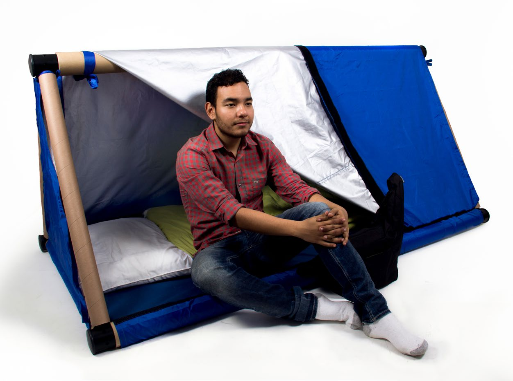
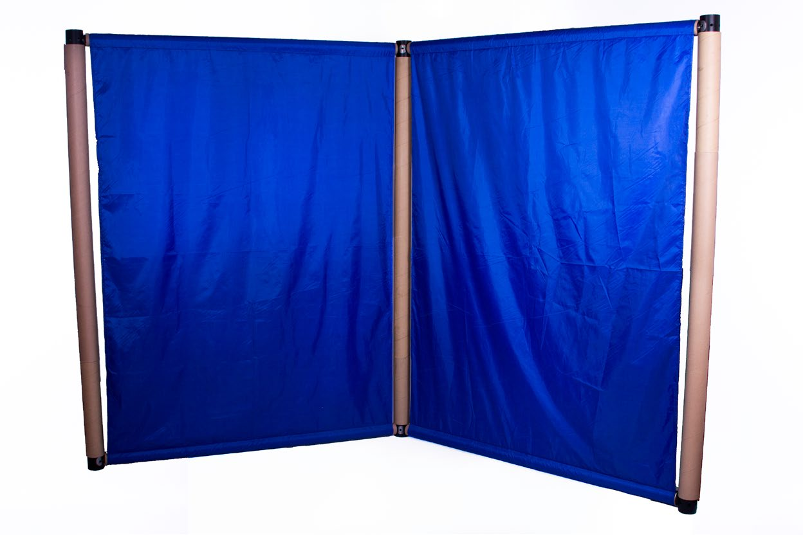
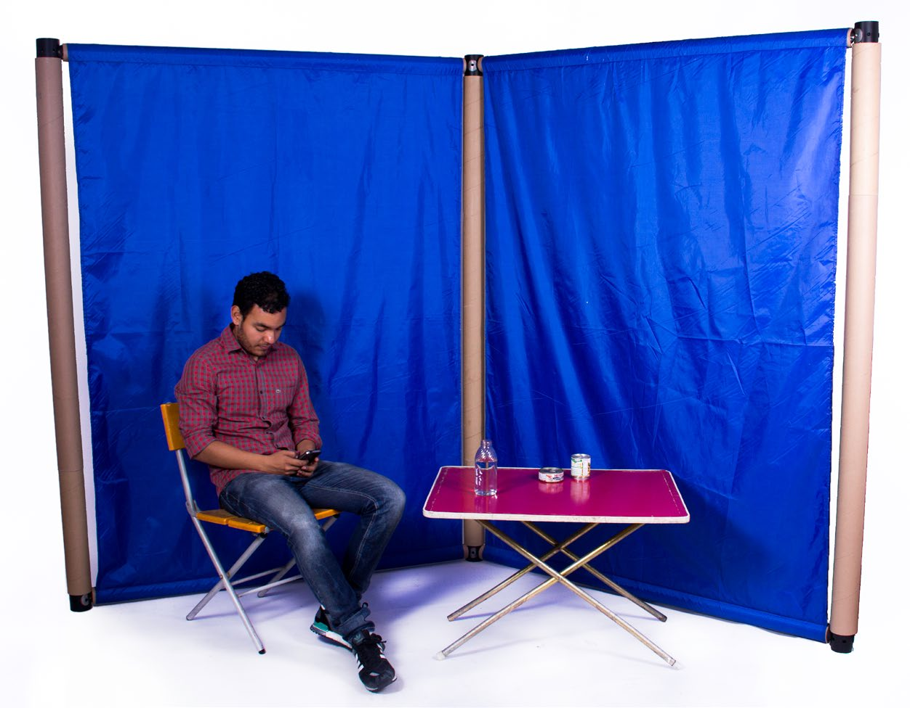
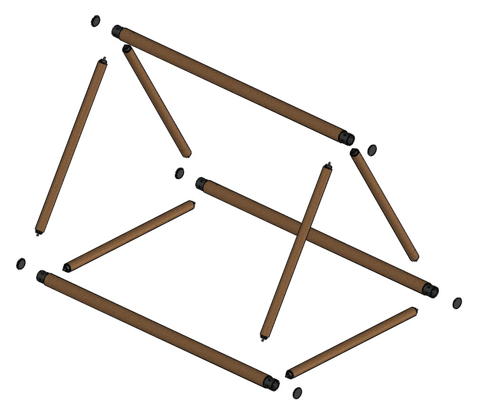
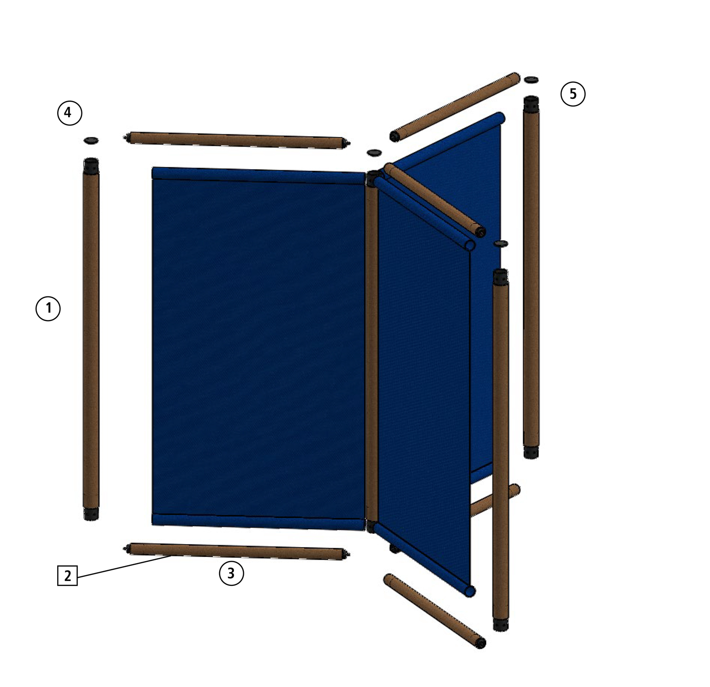

MXN in materials, quoted part by part. Manufacturing processes costed as a separate line.

The rule was written. The layout never was
Mexico opens temporary shelters most years. In 2013 alone, nine out of every ten disasters in the country were hydrometeorological; they reached 20 states, and 401 municipalities were declared disaster zones. Shelters get opened in school gymnasiums, at night, by people who did not plan to be doing it that day.
The Sistema Nacional de Protección Civil publishes an operations manual for exactly this. It is specific where it can count: 3 to 4.5 m² of sleeping area per person, 18 litres of water and 2,500 calories per person per day, one toilet per forty people, nine named staff roles on eight-to-twelve-hour shifts. It is equally specific about intent — families are to be kept together, and the family's privacy protected "as far as possible."
Then, on the distribution of space, it says: no single model exists. The plan varies with the size and shape of the shelter, the number of occupants and how long it will run.
That sentence is honest, and it is also where the manual stops being usable. Everything measurable survives into the real shelter, because you can check it off. Privacy does not, because it is the one requirement with no number attached and no drawing to copy. The gap I found was not a missing rule. It was a rule that had never been translated into something a person under pressure could execute.
In the manual
3–4.5 m² of sleeping area per person
Stated as a ratio, with no indication of how that area should be shaped, oriented or bounded once it is multiplied by two hundred people.
In the manual
"Protect the family's privacy as far as possible"
A general policy with no mechanism behind it. In a gymnasium with no partitions, "as far as possible" resolves to nothing at all.
In the manual
Men at one end, unaccompanied women at the other
Families in the intermediate zone. A safeguarding rule expressed as a seating chart, but never drawn as one.
In the manual
The sleeping area is vacated and cleaned during the day
Which means the same floor has to be two different rooms in twenty-four hours — a requirement stated in a sentence and left there.
Design decision
The ratio becomes a drawn floor plan
The guide gives a plan at scale, keyed to the module footprint, so the person opening the shelter reads a layout instead of doing arithmetic on a gym floor.
Design decision
Privacy becomes an object you can count
A screen module turns an unenforceable policy into an inventory line. You cannot audit "as far as possible", but you can audit how many screens arrived on the truck.
Design decision
Zoning is the first move, not the last
Men's dormitory, women's dormitory and common space are laid out as named zones before any individual position is assigned.
Design decision
Two layouts for one floor: day and night
The system is designed to be struck and re-formed daily, so the manual's cleaning requirement stops competing with the need to sleep somewhere.
Two deliverables, and the furniture is the second one
The thesis produced a visual guide for organising shelter space and a modular furniture system. It is tempting to lead with the furniture because furniture photographs well, but the guide is the argument. The system exists so the guide has something to be drawn with.
I made that choice deliberately, and it is the decision I would defend hardest. The alternative — design a better shelter object and hope it gets adopted — puts the burden back on the institution to work out where to put it. Building the layout from the norm the institution already published meant the proposal arrived as an implementation of their own rules rather than as a competing idea. It also meant the research had a floor: every constraint traced to a document Protección Civil had already committed to.
The two-state layout below is the part of the guide that does the most work. A shelter is not one room — it is a dormitory for eight hours and a place where several hundred people have to live for the other sixteen.
One floor, two configurations — reconfigured daily, not built once
Zones
men's dormitory
women's dormitory
families
common space
medical
stores
recreation
-
Night
Sleeping modules deployed, zones separated
Men at one end, unaccompanied women at the other, families in the intermediate band — the manual's safeguarding rule, drawn rather than described.
-
Morning
The dormitory is struck and the floor is cleared
The manual requires the sleeping area to be vacated and cleaned each day. Anything that cannot be taken down quickly turns that requirement into a rule people quietly stop following.
-
Day
Screens re-form the floor as common space
The same components enclose the areas the manual asks for and never dimensions — medical, stores, recreation, psychological support.
-
Throughout
Capacity scales by adding modules, not by redrawing
Modularity is what lets one guide serve a village hall and a sports arena. The plan does not change shape; the count does.
Two modules, built and photographed at full scale
The system is two pieces. The sleeping module — 2,150 × 1,217 × 1,200 mm — is a cardboard-tube frame carrying a mattress and a tensioned cover, enclosed enough to sleep in and open enough for a shelter manager to see that the person inside is alright. The screen module is a hinged pair of panels that encloses a family group or bounds a zone.
Both were built as full-scale working prototypes and photographed in use, not left as renders. That mattered more than it sounds: the connector — the piece that holds the whole system upright — only proved itself once there was a person's weight leaning on it.



Material choice as a decision about lifespan, part by part
The obvious sustainability move on a disaster-relief object is to make the whole thing from one recyclable material and call it done. I did something narrower, and I still think it is the right instinct: each component was assigned a lifespan, and the material follows from that.
The corner connector takes all the structural load and every manufacturing process in the system — cutting, drilling, finishing — so it is steel. It is also the part that costs the most to make, which is exactly why it should be the part that survives: a connector is recovered and redeployed to the next shelter, and its cost is amortised across deployments rather than charged to one. The secondary connectors are wood, chosen because a cylindrical section needs no further processing to do its job. The tubes are 5 mm cardboard, disposable and fully recyclable. Polyethylene feet close the ends.
Two constraints held across the whole system, both traced to the Cradle to Cradle materials list: no adhesives anywhere, and no toxic materials. Without adhesive, every part separates cleanly at end of life, which is what makes "recyclable" a real claim rather than a label. It is the same reasoning I now apply to design systems — the expensive, load-bearing piece is built once and reused; the cheap, situational piece is allowed to be thrown away.


A social project that isn't costed is a drawing
The intended buyer was never a consumer. It was Protección Civil at federal and state level, with CENAPRED and FONDEN as the acquisition and distribution route — which meant the proposal had to survive a procurement conversation, not a design review.
So the system was quoted, part by part, from named Mexican suppliers: seven components, real 2016 prices, materials and manufacturing processes costed separately. The sleeping module came to $1,796.87 MXN in materials. That number is the reason the project could be argued for at all, and getting it was the least glamorous work in the thesis.
It also explains the connector decision in hard terms. The steel connectors are $290.40 of a $1,797 module — the second-largest line after the mattress — and they are the only part that leaves the shelter to be used again.
Tubes, connectors, caps, feet, mattress and cover — each with an assigned lifespan.
Steel connectors, the only part designed to be recovered and redeployed rather than recycled.
Every part separates cleanly for reprocessing. No toxic materials anywhere in the system.
| Art. | Component | Material | Unit | Qty | Total | Supplier |
|---|---|---|---|---|---|---|
| 1 | Tubo 3″ × 190 | Cardboard tube, 5 mm wall | $30.00 | 3 | $90.00 | Attecsa |
| 2 | Tubo 2″ × 120 | Cardboard tube, 5 mm wall | $14.50 | 6 | $87.00 | Attecsa |
| 3 | Regatón conector | High-density polyethylene | $10.00 | 6 | $60.00 | Casa de Hule |
| 4 | Tapón conector | Wood and screw | $16.56 | 12 | $198.75 | Diona |
| 5 | Conector tubo | Steel tube | $48.40 | 6 | $290.40 | Diona |
| 6 | Colchoneta | Foam and polypropylene canvas | $514.00 | 1 | $514.00 | Diona |
| 7 | Toldo | Polyester and velcro | $556.72 | 1 | $556.72 | Diona |
| Materials total | $1,796.87 | |||||
Manufacturing processes — sewing and assembly, cutting, drilling, painting and finishing — were quoted separately, on a second schedule not reproduced here.
What it was, and what it wasn't
This is a proposal. It was researched against the institution's own manuals, prototyped at full scale and costed from real quotes — and it was never deployed in a shelter or tested with people in an actual emergency. My own conclusions said so at the time: the next step was to put the modules into different disaster zones and find out where they failed.
The second thing I wrote then is the one that has aged best. A project like this needs more than a well-designed product; it needs an implementation programme that fits the object into existing shelter logistics, and follow-up after it ships. A design that arrives without a way of being adopted has not solved the problem it claims to.
I would also push harder on one omission today. The whole case for the layout rests on privacy being the requirement that gets dropped — and I argued that from the manual and from precedent, not from talking to anyone who had lived in a shelter. The reasoning holds, but it was never checked against the people it was about.
Ten years later, still the same question
This was my bachelor thesis, and it is the oldest thing in this portfolio by a decade. It is here because it is where the question started, and because I have not stopped working on it: I now design for an organisation whose work is social impact in disaster and epidemic response.
The medium changed and the problem did not. In 2016 it was a civil protection manual that specified everything except how to lay out the room. In Resiliencia en una Caja it was a resilience methodology that produced a score no business owner could act on, until it was split into pillars that pointed at a next step. In Unidos por Ellxs it was a homepage carrying institutional authority and an emergency donation at the same time, until they were separated into a template each campaign could reuse.
Every one of those is the same job: someone holds real expertise, and the form it is stored in prevents the person who needs it from acting on it under pressure. The furniture was never the point. Making the rule executable was.